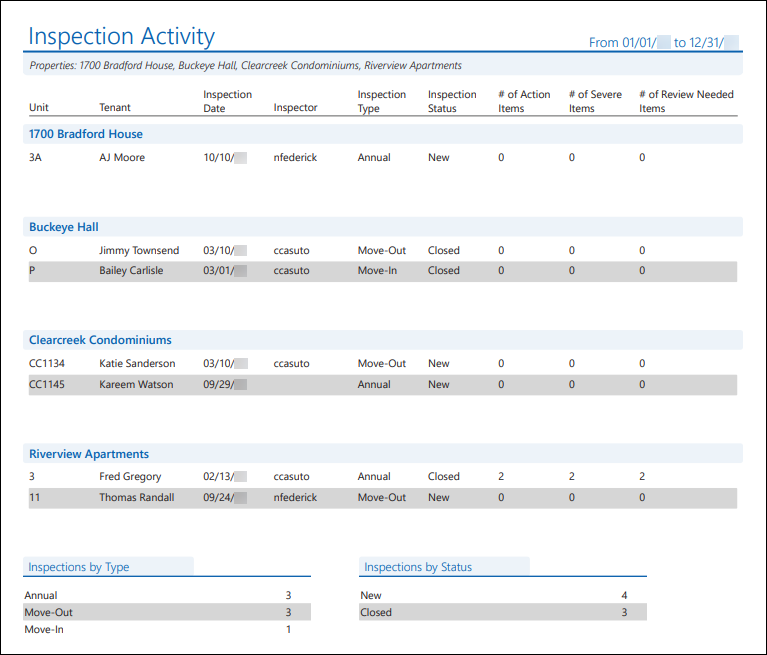
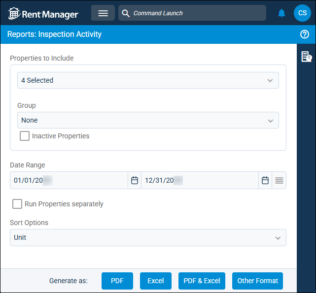
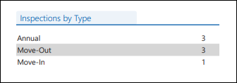
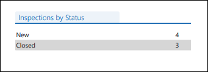

Source: https://rmxhelp.rentmanager.com/Topics/Express/Other/Reports/Inspection-Activity.htm
Inspection Activity Report
The Inspection Activity Report displays a list of inspections that took place across a date range, as well as statistics about these inspections, including the types of inspections performed, the statuses of these inspections, and the number of action, severe, and review items in each inspection.
Related Privileges
| Group | Privilege | Column |
|---|---|---|
| Letter/Email Templates/Reports/Packets | Run reports | Enabled |
Additionally, on the Reports tab, you must have access to Inspection Activity Report.
For more information, refer to Control User Access.
To view the Inspection Activity Report, do the following:
-
Go to
 arrow_forward Services arrow_forward Inspections arrow_forward Inspection Activity Report.
arrow_forward Services arrow_forward Inspections arrow_forward Inspection Activity Report.
The Reports: Inspection Activity Report page displays. -
Adjust the report options as desired. Each option is described below.
-
Generate the report in your desired file format(s).
Related Preferences
Reports may look different depending on whether or not the Use modernized report style system preference is enabled. For more information, refer to General Report Options (System Preferences).

Report Options
The report options described below determine what data displays in the report.

Properties to Include
Select each property or a property Group to be included in the report.
More Information
This field populates only with the properties to which you have access. Your access to properties can be managed from your user account or on the property's details page. For more information, refer to Limit Access to a Property.
Optionally, check Show Inactive Properties to include properties that are no longer active.
Date Range
Enter or select the date range to determine the data that displays in the report.
In the Date Range section, set the From and To dates for which the report should examine data.
These fields automatically populate with today’s date. Enter a different date or select a date from the calendar. Alternatively, adjust the dates using the available preset buttons or click  to open more options for setting a date range.
to open more options for setting a date range.
Run Properties Separately
Check to generate a separate report for each selected property. Otherwise, all selected properties are combined into a single report.
Sort Options
Select one of the following options to determine how the report results are organized within each property section:
| Option | Description |
|---|---|
|
Date |
Inspections are sorted chronologically by the Inspection Date in descending order (newest to oldest). |
|
Inspection Type |
Inspections are sorted alphabetically by the name of the Inspection Type being performed. |
|
Inspector |
Inspections are sorted alphabetically by the username of the Rent Manager user performing the inspection. |
|
Name |
Inspections are sorted alphabetically by the associated tenant's Last Name. Inspections with no tenant display first in the results. |
|
Status |
Inspections are sorted alphabetically by the inspection's currently-assigned Status. |
|
Unit |
Inspections are sorted alphanumerically by associated Unit name. Inspections with no unit display first in the results. |
Report Results
The report results are described below including, if applicable, section, column, and subreport or tab descriptions.
Report Header
The report header displays the report name and key information selected in the report options, such as date information and which properties were examined in the report.
Column Descriptions
The columns that display in the report are described below.
| Column | Description |
|---|---|
|
# of Action Items |
The number of items in each inspection that have been designated as Action Items. The inspection statuses that determine whether an item is an action item can be configured in. |
|
# of Review Needed Items |
The number of items in each inspection that have been designated as Needs Review items. The inspection statuses that determine whether an item needs review can be configured in inspection templates. |
|
# of Severe Items |
The number of items in each inspection that have been designated as Severe items. The inspection statuses that determine whether an item is a severe item can be configured in inspection templates. |
|
Inspection Date |
The date of the inspection, as entered on the Add Inspection pop-up in the Date field. |
|
Inspection Status |
The stage that the inspection is currently in, as entered on the Inspection details page in the Status field. |
|
Inspection Type |
The variety of inspection that will be taking place, as entered on the Inspection details page in the Type field. |
|
Inspector |
The username of the associated user who is responsible for carrying out the inspection, as entered on the Inspection details page in the Inspector field. |
|
Property |
The name of the property at which the inspection is assigned. |
|
Tenant |
If the inspection is associated with a tenant, the full name of the tenant displays as entered on Tenant details page. |
|
Unit |
The name of the unit at which the inspection is assigned. |
Inspections By Type Subreport
The Inspections By Type subreport displays the number of times that each type of inspection appears in the report. An Inspection Type can be selected in the Add Inspection pop-up, or edited on the Inspection details page.

The following rows display in the subreport:
| Row | Description |
|---|---|
|
Count |
The number of times that an inspection of each type appeared in the report results. |
|
Inspection Type |
The name of each variety of inspection that was included in the report results. |
Inspection By Status Subreport
The Inspection By Status subreport displays the number of times that each inspection status appears in the report. An Inspection Status can be selected in the Add Inspection pop-up, or edited on the Inspection details page.

The following rows display in the subreport:
| Row | Description |
|---|---|
|
Count |
The number of times that an inspection with each status appeared in the report results. |
|
Inspection Status |
The name of each inspection status that was included in the report results. |